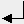
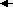
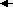
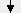
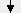
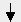
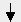

Esc
F1
F2
F3
F4
F5
F6
F7
F8
F9
F10
F11
F12
Impr
Pant Bloq
Des Pausa Bloq
Num Bloq
Mayus Bloq
Des
Pant Bloq
Des Pausa Bloq
Num Bloq
Mayus Bloq
Des
Pag Bloq
Num / * -

Supr
Fin
Av
Pag 7
Inicio 8
 9
9
RePag +
Pag 7
Inicio 8
RePag +
Bloq Mayus
4
 5 6
 5 6
>
< 1
Fin 2
 3
AvPag Enter
< 1
Fin 2
 3
AvPag Enter
Ctrl
 Alt
Alt Gr
Ctrl
Alt
Alt Gr
Ctrl
 

 0
0
Ins .
Supr
Ins .
Supr